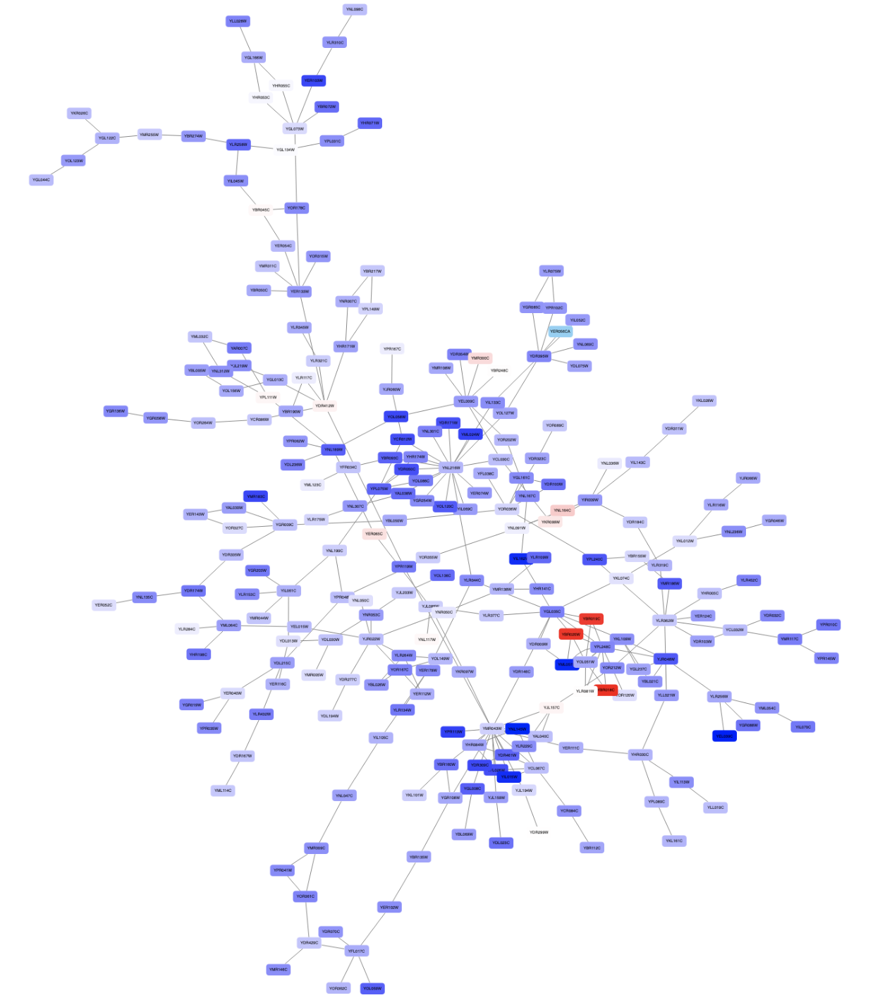
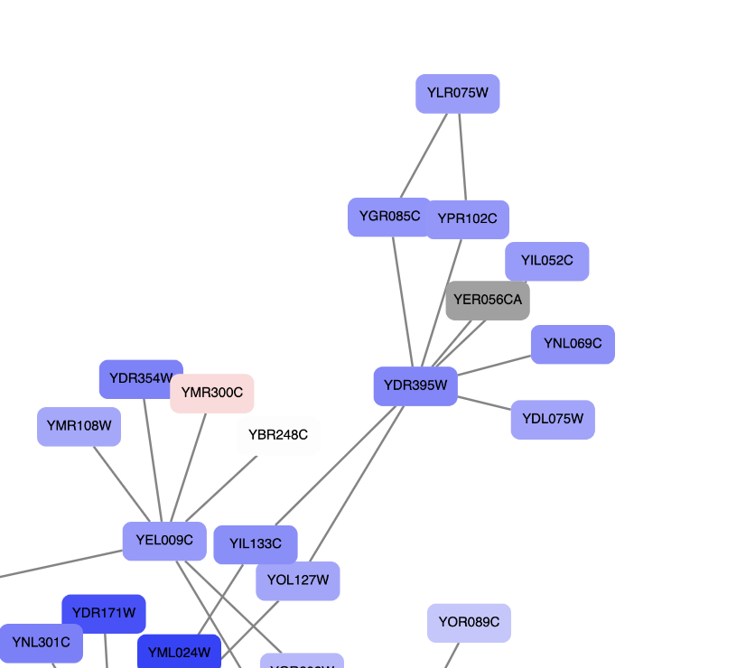
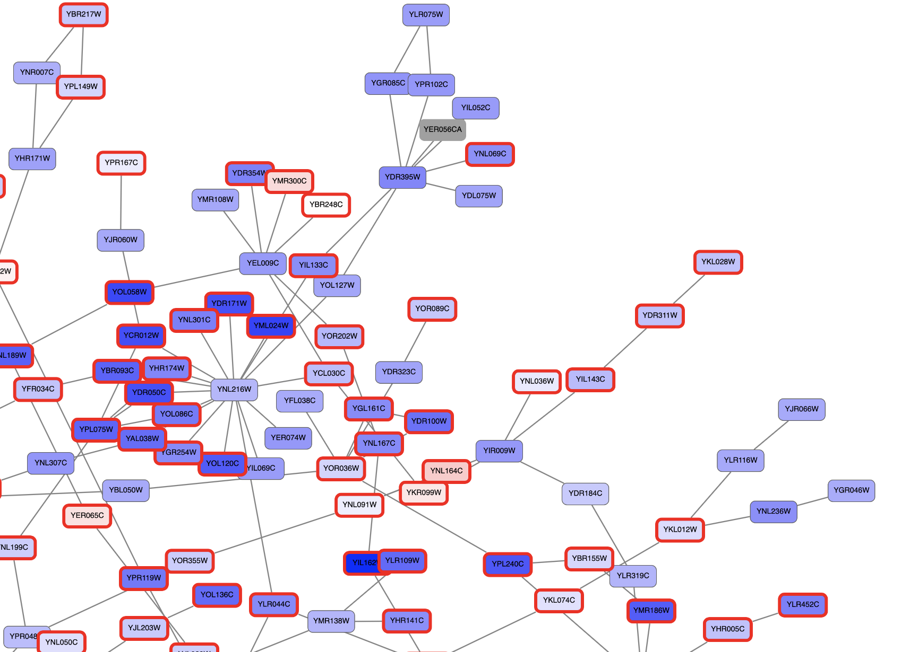
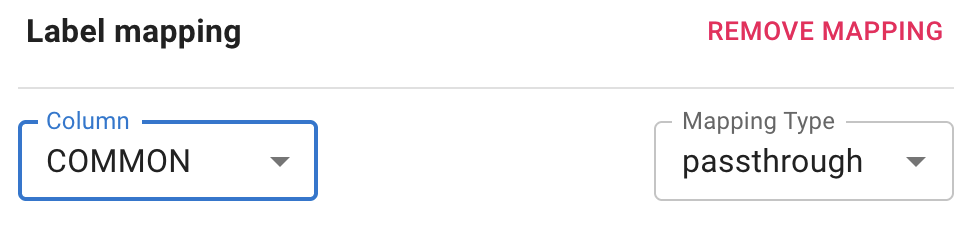
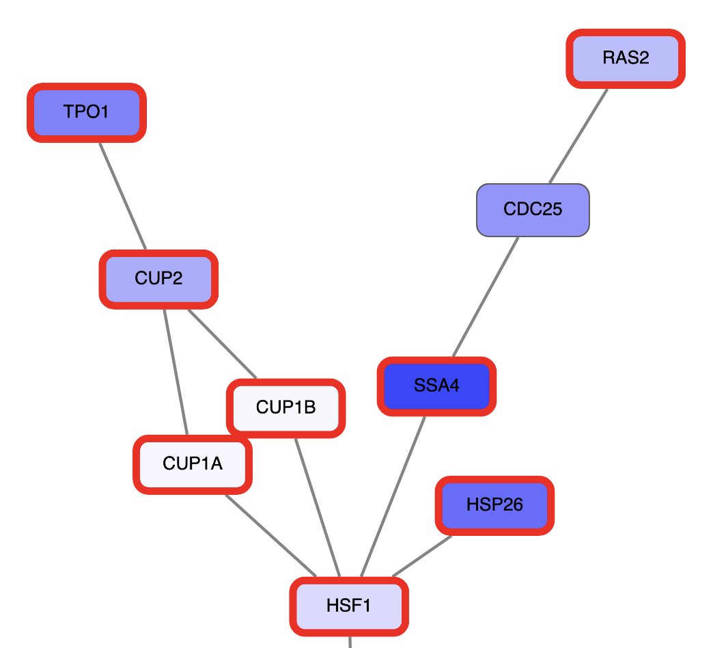
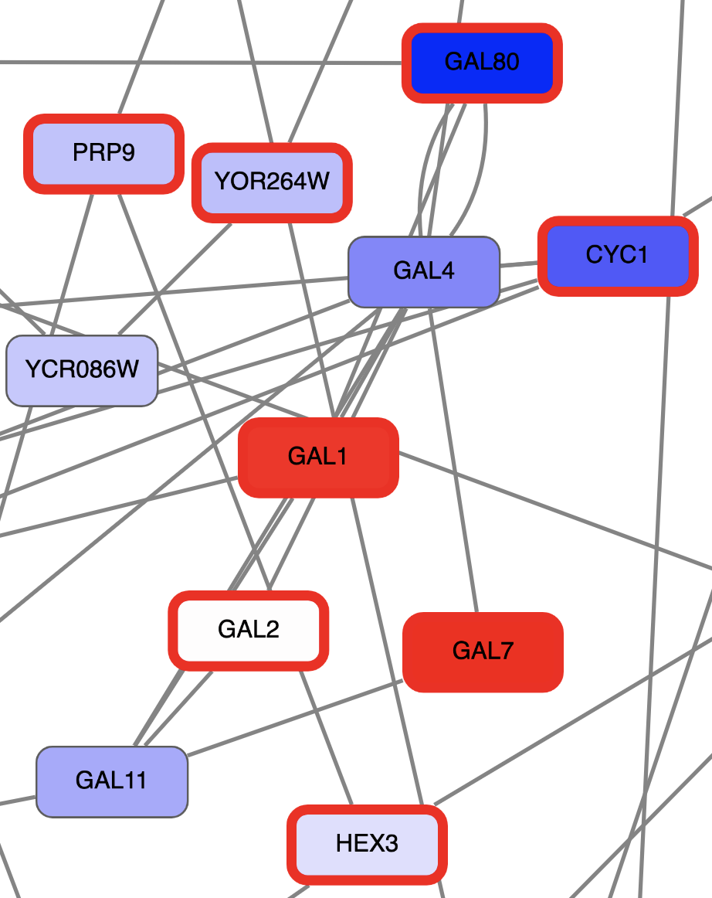

Basic Data Visualization in Cytscape Web
This tutorial presents a scenario of how expression data and network data can be combined to tell a biological story and includes these concepts:
- Visualizing networks using expression data.
- Assessing expression data in the context of a biological network.

Loading Network
- Navigate to Cytoscape Web.
- We will use NDEx to find a relevant network. Select
Data → Open Network(s) from NDEx... . In theSearch NDEx field, type in "GAL1 GAL4 GAL80" (without the quotes). - In the search results, find the galFiltered network with data. Click on the network to select it, and click the
OPEN 1 NETWORK button on the bottom right. - The network will open with the default style, similar to the network on the right:
To learn more about importing networks from local files, see the Loading Networks Tutorial.
Visualizing Expression Data on Networks
Probably the most common use of expression data in Cytoscape is to set the visual properties of the nodes (color, shape, border) in a network according to expression data. This creates a powerful visualization, portraying functional relation and experimental response at the same time. Here, we will show an example of doing this.
The data used in this example is from yeast, and represents an experiment of perturbations of the genes GAL1, GAL4, and GAL80, which are all yeast transcription factors.
Visualizing Expression Data on Networks
For this tutorial, the experimental data was part of the Cytoscape network file you loaded earlier, and is visible in the
- Selecting nodes in the network (Shift + Click-and-Drag or Command + Click-and-Drag) will update the
Table Panel to show only data for those nodes. - Similarly, you can click on rows to select them, or Shift + Click (or Command + Click) on multiple rows, and then click the
SELECT NODES button to highlight the corresponding nodes in the network.
To learn more about importing data, see the Importing Data Table Files in the Cytoscape Web manual.
Visualizing Expression Data on Networks
We can now use the data to manipulate the visual properties of the network by mapping specific data columns to visual style properties:
- The gal80Rexp expression values will be mapped to
Node Fill Color ; nodes with low expression will be colored blue, nodes with high expression will be colored red. - Significance of expression values, gal80Rsig, will be mapped to
Node Border Width ; nodes with significant changes will appear with a thicker border.
Set Node Fill Color
- Click on the
STYLE tab in theControl Panel on the left. - Find
Fill Color in the list of properties in theNODE tab and click on theMapping column. - In the
Column pulldown, select gal80Rexp. - In the
Mapping Type pulldown, selectcontinuous . - This produces a default ColorBrewer gradient ranging from blue to red for expression values. For our purposes, this gradient works so we don't need to edit it. Click anywhere in browser window to exit the
Fill Color Mapping interface.
To learn more about changing node color, see the Styles Tutorial.
Set Node Fill Color
The nodes in the network are now colored based on the gal80RExp data column:
Set Default Node Color
Some nodes in the network don't have any data, and for those nodes, the default color applies. In our case, the default color is blue, which falls within the spectrum of our blue-red gradient. This is not ideal for data visualization, so a useful trick is to choose a color outside the gradient spectrum to distinguish nodes with no defined expression value.
- Still in the
STYLE tab, underNode Fill Color , click theDefault column of theFill Color property. - Click a light grey color tile in a color palette. Click
CONFIRM .
Set Default Node Color
Note that at least one node in the network is now colored grey:
Set Node Border Width
- In the
NODE tab of theStyle panel, click on theMapping column for theBorder Width property. - In the
Column pulldown, select gal80Rsig. - In the
Mapping Type pulldown, selectcontinuous . - First, we will define the min/max of the range of p values we are interested in, that is anything under 0.05. Click the
SET MIN AND MAX button and set the set the max to 0.05. ClickCONFIRM . - Click on the handle for the max value and set the value to 5 in the
Border Width field. ClickCONFIRM . Repeat with the handle for the min value. - We have now defined the Node Border Width between 0 and 0.05, but we also need to define the values above this range. Click on the box to the right of the graph, and set the value to 1. Click
CONFIRM . - Click the
Default column forBorder Paint and select a dark grey color.
Set Node Border Color
- Click on the
Mapping column for theNode Border Paint property. - In the
Column pulldown, select gal80Rsig. - In the
Mapping Type pulldown, selectcontinuous . - Similar to the last step, we will define the min/max of the range of p values we are interested in, that is anything under 0.05. Click on
SET MIN AND MAX button and set the max to 0.05. ClickCONFIRM . - Click on the box to the right of the gradient. This defines the border color for nodes with gal80Rsig > 0.05, so let's set it to dark grey.
- Next, set all the other handles to the same dark red color.
Set Node Border Width
All nodes with a gal80RSig p-value of 0.05 or less will now have a thicker red border:
Set Node Label
The network nodes are by default labeled with yeast ORF identifiers. We can change the label to something more readible, like the gene symbol.

Set Node Label
Zoom in to see the updated labels:
Layouts
An important aspect of network visualization is the layout, meaning the positioning of nodes and edges. Our network had a preset layout in the original file you imported, but this can be changed.
- Let's change the layout to a force-directed layout by selecting
Layout → G6: gForce . - The settings for any layout algorithm can be updated under
Layout → Settings... . To make the network easier to interpret, let's update thenodeStrength parameter to 1500. ClickAPPLY LAYOUT .
Interpretation
Let's explore one of the perturbed transcription factors in more detail; GAL4.
- To find the GAL4 node in the network, search for it in the search box in the upper right.
- Manually zoom in on the network surrounding the GAL4 node. You can scroll to zoom or click and drag to pan.

Interpretation
Digging into the biology of this network, it turns out that GAL4 is repressed by GAL80. Both GAL4 and GAL11 show fairly small changes in expression, and neither change is statistically significant: they are pale blue with thin borders. These slight changes in expression suggest that the critical change affecting the red nodes might be somewhere else in the network, and not either of these nodes. GAL4 interacts with GAL80, which shows a significant level of repression: it is medium blue with a thicker border.
Note that while GAL80 shows evidence of significant repression, most nodes interacting with GAL4 show significant levels of induction: they are rendered as red rectangles. GAL11 is a general transcription co-factor with many interactions.
Putting all of this together, we see that the transcriptional activation activity of Gal4 is repressed by Gal80. So, repression of Gal80 increases the transcriptional activation activity of Gal4. Even though the expression of Gal4 itself did not change much, the Gal4 transcripts were much more likely to be active transcription factors when Gal80 was repressed. This explains why there is so much up-regulation in the vicinity of Gal4.
Summary
In summary, we have:
- Explored a yeast interactome from a transcription factor knockout experiment
- Created a visual style using expression value as node color and with border width mapped to significance
- Reviewed high expressing genes and their neighbors
Finally, we can now share this this network in several ways.
Sharing Results
Cytoscape Web can generate publication-quality images from network views, and you can also share your Cytoscape Web workspace easily.
- Export as an image:
Data → Export → Network to Image... - Share workspace: In the bottom right of the
Network View Window , click theShare this network button . - Open in Cytoscape desktop: In the bottom right of the
Network View Window , click theOpen in Cytoscape Desktop button .